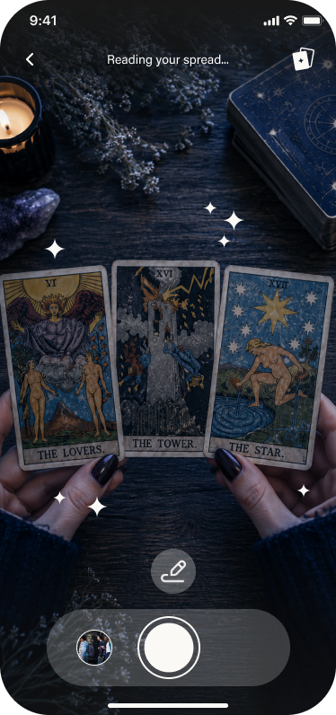
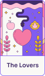
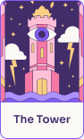

What is this teaching me?
Spelly reads the spread,
not just the cards.
Spelly scans your real tarot cards, recognizes the spread, and turns it into a clear AI reading based on your question.



The Lovers
The Tower
The Star
This spread points to a truth that wants to surface. The connection may feel intense, but it is here to show what needs honesty, release, and healing.
Read your cards with AI.
Be the first to scan a spread. Join the waitlist and get early access to Spelly.
You're on the list. We'll be in touch ✦